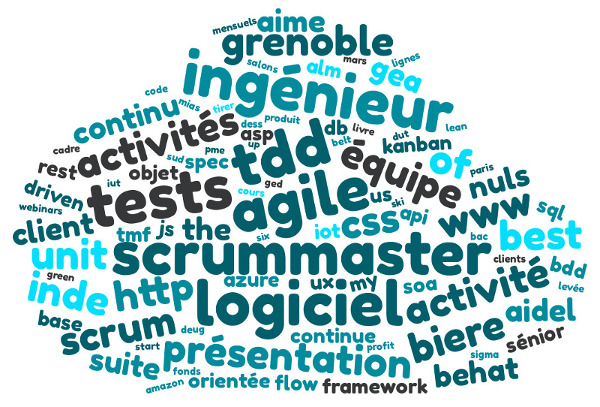

@MarcNazarian
@Test
public void min_max_of_a_number_collection_without_stream() {
List<Integer> numbers = Arrays.asList(12, 42, 55, 3, 121, 666, 202);
Integer min = Integer.MAX_VALUE;
Integer max = Integer.MIN_VALUE;
for (Integer number: numbers) {
if (number < min) {
min = number;
}
if (number > max) {
max = number;
}
}
assertThat(min).isEqualTo(3);
assertThat(max).isEqualTo(666)
}@Test
public void min_max_of_a_number_collection() {
List<Integer> numbers = Arrays.asList(12, 42, 55, 3, 121, 666, 202);
Integer min = numbers.stream().min(Integer::compareTo).get();
Integer max = numbers.stream().max(Integer::compareTo).get();
assertThat(min).isEqualTo(3);
assertThat(max).isEqualTo(666);
}@Test
public void find_all_even_numbers_without_stream_api() {
List<Integer> numbers = Arrays.asList(12, 42, 55, 3, 121, 666, 202);
List<Integer> evenNumbers = new ArrayList<>();
for (Integer number: numbers) {
if (number % 2 == 0) {
evenNumbers.add(number);
}
}
assertThat(evenNumbers).isEqualTo(Arrays.asList(12, 42, 666, 202));
}@Test
public void find_all_even_numbers() {
List<Integer> numbers = Arrays.asList(12, 42, 55, 3, 121, 666, 202);
List<Integer> evenNumbers = numbers.stream()
.filter(number -> number % 2 == 0)
.collect(Collectors.toList());
assertThat(evenNumbers).isEqualTo(Arrays.asList(12, 42, 666, 202));
}